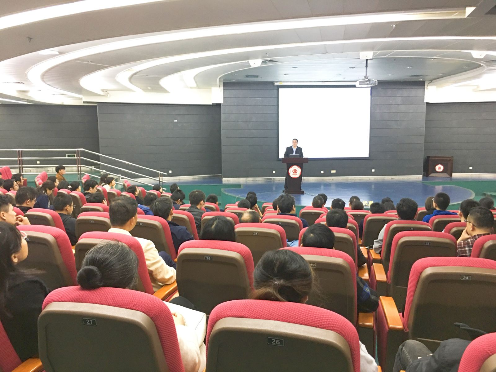

2020年国家自然科学基金指南已发布，为了更好地帮助项目申请人熟悉申报政策，提高申报质量，科技与人文研究院于1月17日上午9：30在我校大讲堂圆弧报告厅召开2020国家自然科学基金申报指南解读会。
会上，科技与人文研究院陈辉副院长对2020年国家自然科学基金申报指南进行了详细解读，重点指出了2020年申报政策的新变化，并对国家基金申报工作做了详细安排。在答疑环节，老师们踊跃提问，气氛热烈。天气微寒，又正值寒假期间，但仍挡不住老师们申报国家自然科学的热情。

返回上一页